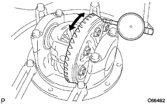

ディファレンシャル キャリヤASSY RR（4WD） 組み付け |
| 1. デイフアレンシヤルケースASSY取り付け |
スラストワッシャをサイドギヤに取り付ける。
サイドギヤ(ワッシャ付き)、ピニオン、ピニオンシャフトおよびピニオンスラストワッシャを取り付ける。
ダイヤルゲージをサイドギヤ歯面に直角に取り付ける。
ピニオンをディファレンシャルケースの方へ固定し、サイドギヤバックラッシュを測定する。
サイドギヤのバックラッシュが基準値内になり、かつスムーズに回るよう左右両側とも同じサイズのスラストワッシャを選択し調整する。
| 品番 | 厚さ[mm] |
|---|---|
| 41361-12010 | 1.48-1.52 |
| 41361-12020 | 1.53-1.57 |
| 41361-12030 | 1.58-1.62 |
| 41361-12040 | 1.63-1.67 |
| 41361-12050 | 1.68-1.72 |
| 41361-12060 | 1.73-1.77 |
 |
ピンポンチおよびハンマーを使用して、ピニオンシャフトピンをディファレンシャルリングギヤの歯面側から打ち込む。
 |
ポンチおよびハンマーを使用して、リヤディファレンシャルケースのピン穴外周をかしめる。
| 2. デイフアレンシヤルリングギヤ取り付け |
リヤディファレンシャルケースのディファレンシャルリングギヤ合わせ面の油脂を十分に清掃する。
ディファレンシャルリングギヤを熱湯などで100°Cに加熱する。
リヤディファレンシャルケースとディファレンシャルリングギヤの合わせマークを合わせて、ディファレンシャルリングギヤを素早く取り付ける。
ボルト8本を締め付ける。
| 3. リヤディファレンシャルケース ベアリング取り付け |
SSTおよびプレスを使用して、リヤディファレンシャルケースにベアリングRHを圧入する。
| 4. リヤディファレンシャルケース ベアリング取り付け |
 |
SSTおよびプレスを使用して、リヤディファレンシャルケースにベアリングLHを圧入する。
| 5. デイフアレンシヤルリングギヤ振れ点検 |
リヤディファレンシャルケースをリヤディファレンシャルキャリアに取り付け、ベアリングにガタがない程度にスラストシムを取り付ける。
ボルト各2本で、左右のベアリングキャップを取り付ける。
|  |
ダイヤルゲージをディファレンシャルリングギヤの背面に直角に取り付け、リングギヤの振れを点検する。
ボルト4本を取りはずし、ベアリングキャップ2個およびリヤディファレンシャルケースを取り付ける。
| 6. フロントベアリングアウタレース取り付け |
 |
SSTおよびプレスを使用して、リヤドライブピニオンテーパーローラーベアリングFRアウタレースを圧入する。
| 7. リヤベアリングアウタレース取り付け |
SSTおよびプレスを使用して、取りはずし時と同じ厚さのピニオンワッシャ(新品)および、リヤドライブピニオンテーパードローラベアリングRRアウタレースを圧入する。
| 8. リヤドライブ ピニオン テーパードローラベアリング RR取り付け |
 |
SSTおよびプレスを使用して、リヤドライブピニオンテーパードローラベアリングRRをディファレンシャルドライブピニオンに圧入する。
| 9. デイフアレンシヤルドライブピニオンプレロード調整 |
ディファレンシャルドライブピニオンおよびリヤドライブピニオンテーパードローラベアリングFRをリヤディファレンシャルキャリアに取り付ける。
リヤドライブピニオンオイルスリンガを取り付ける。
 |
SSTを使用して、リヤドライブピニオンコンパニオンフランジRRを取り付ける。
新品のリヤドライブピニオンナットのねじ部にハイポイドギヤオイルLSDを塗布する。
SSTを使用してリヤドライブピニオンフランジRRを固定し、ディープソケットレンチ(24mm)およびトルクレンチを使用して新品のリヤドライブピニオンナットを規定のプレロードになるように少しずつ締め付ける。
 |
ディファレンシャルドライブピニオンの起動トルクを点検する。
| 10. リヤディファレンシャル ケースSUB-ASSY取り付け |
ケースベアリング(サイドベアリング)にベアリングアウタレースを取り付ける。
リヤディファレンシャルケースをリヤディファレンシャルキャリアに取り付ける。
| 11. デイフアレンシヤルリングギヤバツクラツシユ調整 |
ダイヤルゲージをディファレンシャルリングギヤの歯面先端に直角に取り付ける。
ディファレンシャルリングギヤ背面側にディファレンシャルリングギヤのバックラッシュがほぼ基準値内に入るようなスラストシムを選択して取り付ける。
| 品番 | 厚さ［mm］ | 識別マーク |
|---|---|---|
| 90564-51035 | 2.51-2.53 | 52 |
| 90564-51036 | 2.54-2.56 | 55 |
| 90564-51037 | 2.57-2.59 | 58 |
| 90564-51038 | 2.60-2.62 | 61 |
| 90564-51001 | 2.63-2.65 | 64 |
| 90564-51002 | 2.66-2.68 | 67 |
| 90564-51003 | 2.69-2.71 | 70 |
| 90564-51004 | 2.72-2.74 | 73 |
| 90564-51005 | 2.75-2.77 | 76 |
| 90564-51006 | 2.78-2.80 | 79 |
| 90564-51007 | 2.81-2.83 | 82 |
| 90564-51008 | 2.84-2.86 | 85 |
| 90564-51009 | 2.87-2.89 | 88 |
| 90564-51010 | 2.90-2.92 | 91 |
| 90564-51011 | 2.93-2.95 | 94 |
| 90564-51012 | 2.96-2.98 | 97 |
| 90564-51013 | 2.99-3.01 | 00 |
| 90564-51014 | 3.02-3.04 | 03 |
| 90564-51015 | 3.05-3.07 | 06 |
| 90564-51016 | 3.08-3.10 | 09 |
| 90564-51017 | 3.11-3.13 | 12 |
| 90564-51018 | 3.14-3.16 | 15 |
| 90564-51019 | 3.17-3.19 | 18 |
| 90564-51020 | 3.20-3.22 | 21 |
| 90564-51021 | 3.23-3.25 | 24 |
| 90564-51022 | 3.26-3.28 | 27 |
| 90564-51023 | 3.29-3.31 | 30 |
| 90564-51024 | 3.32-3.34 | 33 |
| 90564-51025 | 3.35-3.37 | 36 |
| 90564-51026 | 3.38-3.40 | 39 |
| 90564-51027 | 3.41-3.43 | 42 |
プラスチックハンマーを使用して、リングギヤを軽くたたき、ベアリングとスラストシムを十分落ち着かせる。
リヤドライブピニオンコンパニオンフランジを固定し、リングギヤを動かしてバックラッシュを点検する。
基準値外の場合は、ディファレンシャルリングギヤのバックラッシュが参考値付近になるようにスラストシムを選択して、ディファレンシャルリングギヤ背面側に取り付ける。
ディファレンシャルリングギヤ歯面側のサイドベアリングアウタレース端面とキャリアのすき間が0mmか、または0mmに近いスラストシムのうち一番厚いものを選択する。
プラスチックハンマーを使用して、ディファレンシャルリングギヤを軽くたたき、ベアリングを十分落ち着かせる。
 |
ダイヤルゲージをリングギヤの歯面先端に直角に当て、リヤドライブピニオンコンパニオンフランジRRを固定し、ディファレンシャルリングギヤを動かしてバックラッシュを点検する。
基準値外の場合は、左右のスラストシムの厚さを同量ずつ増減させて基準値内にする。
| 12. ディファレンシャルサイドベアリングプレロード調整 |
ディファレンシャルリングギヤのバックラッシュ調整後、ディファレンシャルリングギヤ歯面側のスラストシムを取りはずす。
マイクロメーターを使用して、取りはずしたスラストシムの厚さを測定する。
取りはずしたスラストシムより0.06-0.09mm厚いスラストシムを選択する。
SSTおよびハンマーを使用して、スラストシムを打ち込む。
ベアリングキャップとディファレンシャルキャリアの合わせマークを合わせて、ベアリングキャップを取り付ける。
ボルト各2本で、左右のベアリングキャップを締め付ける。
|
ダイヤルゲージをディファレンシャルリングギヤの歯面先端に当て、リヤドライブピニオンコンパニオンフランジRRを固定し、ディファレンシャルリングギヤを動かしてバックラッシュを点検する。
基準値外の場合は、左右スラストシムの厚さを同量ずつ増減させて基準値内にする。
| 13. 総合プレロード測定 |
|
トルクレンチおよびディープソケットレンチ(24mm)を使用して、ディファレンシャルドライブピニオンとディファレンシャルリングギヤの歯面を当てた状態で起動トルクを点検する。
| 14. デイフアレンシヤルリングギヤとドライブピニオンの歯当たり点検 |
ディファレンシャルリングギヤの歯面両側に光明丹を薄く均一に塗布し、ディファレンシャルリングギヤを数回、正転、逆転させる。
フェース当たり、フランク当たりの場合は、以下の作業を行う。
左右のサイドギヤシャフトワッシャの厚さを同量ずつ増減させたものを選択し、リヤディファレンシャルケースベアリングアウタレースを取り付ける。(*1)
ディファレンシャルリングギヤとディファレンシャルドライブピニオンの歯当たり点検を再度行う。
ディファレンシャルリングギヤとディファレンシャルドライブピニオンのバックラッシュ点検を再度行う。
ヒール当たり、トー当たりの場合は、以下の作業を行う。
リヤディファレンシャルドライブピニオンワッシャを再度選択し、リヤドライブピニオンテーパードローラベアリングRR取り付けを行う。
| 品番 | 厚さ[mm] | 識別マーク |
|---|---|---|
| 90564ー59026 | 2.25-2.27 | A |
| 90564ー59027 | 2.27-2.29 | B |
| 90564ー59028 | 2.29-2.31 | C |
| 90564ー59029 | 2.31-2.33 | D |
| 90564ー59030 | 2.33-2.35 | E |
| 90564ー59031 | 2.35-2.37 | F |
| 90564ー59032 | 2.37-2.39 | G |
| 90564ー59033 | 2.39-2.41 | H |
| 90564ー59034 | 2.41-2.43 | J |
| 90564ー59035 | 2.43-2.45 | K |
| 90564ー59036 | 2.45-2.47 | L |
| 90564ー59037 | 2.47-2.49 | M |
| 90564ー59038 | 2.49-2.51 | N |
| 90564ー59039 | 2.51-2.53 | P |
| 90564ー59040 | 2.53-2.55 | Q |
| 90564ー59041 | 2.55-2.57 | R |
| 90564ー59042 | 2.57-2.59 | S |
| 90564ー59043 | 2.59-2.61 | T |
ディファレンシャルドライブピニオンプレロード調整からディファレンシャルリングギヤとディファレンシャルドライブピニオンの歯当たり調整までの作業を再度行う。
| 15. リヤ ドライブピニオン ナット取りはずし |
| 16. リヤ ドライブピニオン コンパニオンフランジ RR取りはずし |
| 17. リヤディファレンシャル ドライブピニオン オイルスリンガ取りはずし |
| 18. リヤドライブ ピニオン テーパードローラベアリング FR取りはずし |
 |
SSTを使用して、テーパードローラーベアリングFRをディファレンシャルキャリアから取りはずす。
| 19. リヤディファレンシャル ドライブピニオン ベアリング スペーサ取り付け |
リヤディファレンシャルドライブピニオンに新品のスペーサを取り付ける。
| 20. リヤドライブ ピニオン テーパードローラベアリング FR取り付け |
SST、鉄片およびプレスを使用して、リヤドライブピニオンテーパードローラベアリングFRを圧入する。
| 21. リヤディファレンシャル ドライブピニオン オイルスリンガ取り付け |
| 22. リヤディファレンシャル キャリア オイルシール取り付け |
新品のリヤディファレンシャルキャリアオイルシールリップ部にMPグリースNo.2を塗布する。
 |
SSTおよびハンマーを使用して、新品のリヤディファレンシャルキャリアオイルシールを打ち込む。
| 23. リヤディファレンシャル ダストデフレクタ取り付け |
SSTおよびプレスを使用して、新品のリヤディファレンシャルダストデフレクタを圧入する。
| 24. リヤ ドライブピニオン コンパニオンフランジ RR取り付け |
SSTを使用して、リヤドライブピニオンコンパニオンフランジRRを取り付ける。
新品のリヤドライブピニオンナットのねじ部にハイポイドギヤオイルLSDを塗布する。
SSTを使用してリヤドライブピニオンコンパニオンフランジRRを固定し、ディープソケットレンチ(24mm)およびトルクレンチを使用して新品のリヤドライブピニオンナットをプレロードを確認しながら締め付ける。
| 25. デイフアレンシヤルドライブピニオンプレロード点検 |
トルクレンチを使用して、ディファレンシャルドライブピニオンとディファレンシャルリングギヤのバックラッシュの範囲内で起動トルクを点検する。
プレロードが過大の場合は、ベアリングスペーサを交換する。
プレロードが不足の場合は、リヤドライブピニオンナットを5-10°ずつ増し締めしてプレロードを点検し、基準値になるように繰り返し調整する。
リヤドライブピニオンナットの締め付けトルクが限度値(235N·m{2400kgf·cm})を超えてもプレロード不足の場合はリヤドライブピニオンナットを一度ゆるめて、リヤドライブピニオンナットおよびディファレンシャルドライブピニオンのねじ山がつぶれていないか点検する。
異常がなければ、スペーサを交換し、ねじ部にハイポイドギヤオイルLSDを塗布したのち作業を繰り返す。
総合プレロード点検のためにプレロードを記録しておく。
| 26. 総合プレロード点検 |
|
トルクレンチを使用して、ディファレンシャルドライブピニオンとディファレンシャルリングギヤ歯面を当てた状態で起動トルクを点検する。
| 27. デイフアレンシヤルリングギヤとドライブピニオンのバツクラツシユ点検 |
ダイヤルゲージをディファレンシャルリングギヤの歯面先端に直角に当て、ディファレンシャルドライブピニオンのリヤドライブピニオンフランジRRを固定し、ディファレンシャルリングギヤを動かして点検する。
| 28. リヤ ドライブピニオン コンパニオンフランジ RR振れ点検 |
 |
ダイヤルゲージをリヤドライブピニオンコンパニオンフランジRRの内周面に直角に取り付け、リヤドライブピニオンコンパニオンフランジRRの縦振れを測定する。
ダイヤルゲージをリヤドライブピニオンコンパニオンフランジ面の図の位置に直角に取り付け、リヤドライブピニオンコンパニオンフランジRRの横振れを測定する。
| 29. リヤ ドライブピニオン ナット取り付け |
 |
タガネおよびハンマーを使用して、リヤドライブピニオンナットをかしめる。